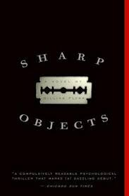

Sharp Objects is about when reporter Camille Preaker returns to her hometown to cover a sinster story that has been unfolding. Between memories from her past and the happenings of her present, will she be able to complete her assignment? More importantly, will she be able to make it out alive?
Slowly, Camille begins to disover what actually happened to her sister while reporting on a string of murders. Tying past and present together, she begins to realize the crimes of her family, and tries to stop them before another child is hurt.
 About the Author